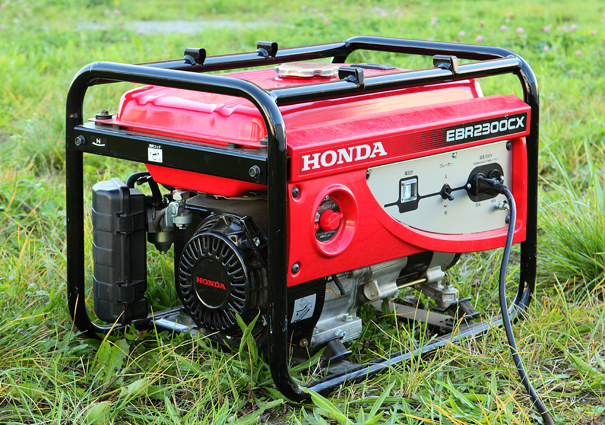

Docstring:
iter(iterable) -> iterator
iter(callable, sentinel) -> iterator
Get an iterator from an object. In the first form, the argument must
supply its own iterator, or be a sequence.
In the second form, the callable is called until it returns the sentinel.
Type: builtin_function_or_methodIterators and Generators
Iteratively Generating Iterative Generators
Python
Bits and Bobs
Iterators and generators shown by example.
This notebook follows the fastai style guide.

This bits and bobs is explained in terms of my explorations and experimentations. Therefore, explanations and descriptions below may not necessarily be accurate.
iter
iter creates what’s known as an iterator. It is a type of iterable.
An iterable is anything that can be looped through (e.g., a list or a string).
iter essentially allows you to loop through an iterable without using a for loop. It gives you finer and more granuler control over when you loop, and how how much you loop.
l = list(range(10)); l[0, 1, 2, 3, 4, 5, 6, 7, 8, 9]it = iter(l); it<list_iterator at 0x11e29a6e0>next(it)0next(it)1next(it)2islice
islice is a type of iterator that returns \(x\) items from an iterable at a time.
Init signature: islice(self, /, *args, **kwargs)
Docstring:
islice(iterable, stop) --> islice object
islice(iterable, start, stop[, step]) --> islice object
Return an iterator whose next() method returns selected values from an
iterable. If start is specified, will skip all preceding elements;
otherwise, start defaults to zero. Step defaults to one. If
specified as another value, step determines how many values are
skipped between successive calls. Works like a slice() on a list
but returns an iterator.
Type: type
Subclasses: from itertools import islice
it = iter(l)
list(islice(it, 5))[0, 1, 2, 3, 4]list(islice(it, 5))[5, 6, 7, 8, 9]list(islice(it, 5))[]yield
yield is a substitute for return in a function or method. When yield is used, the function is known as a generator.
yield essentially allows you to perform multiple returns, and also allows you to treat a function as an iterator.
Multiple Returns
To demonstrate multiple returns, let’s create a function that chops a list up into smaller lists.
def chunks(l, step):
for i in range(0, len(l), step): yield l[i:i+step]list(chunks(l, 5))[[0, 1, 2, 3, 4], [5, 6, 7, 8, 9]]Function as an Iterator
l_iter = chunks(l, 5); l_iter<generator object chunks at 0x11e2a8cf0>next(l_iter)[0, 1, 2, 3, 4]next(l_iter)[5, 6, 7, 8, 9]next(l_iter)StopIteration: If you have any comments, questions, suggestions, feedback, criticisms, or corrections, please do post them down in the comment section below!